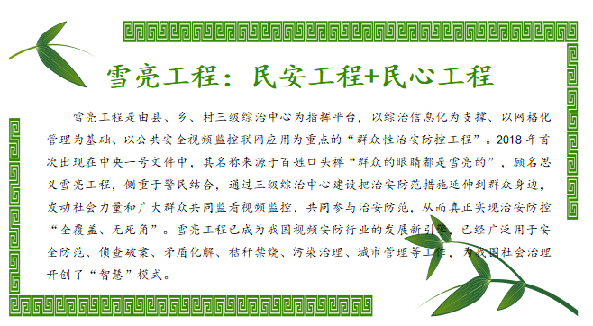

任务四 智能安防
【任务描述】
川流不息的高速路上，旅游客车驾驶员是否危险驾驶，车内是否有突发状况?交通运输管理部门在线就可以监控，这是智能技术在交通领域小试牛刀；人来人往的海关，身姿小巧的海关无人智能巡检查验车灵活穿行，提供智慧安防服务;相对宁静的城市地下综合管廊里，机器人来回检测，这是城市操作系统在新型城市基础设施建设中的应用体现；在大自然中，智慧水立方平台为江河湖泊全流域水环境管理和治理提供跟踪监测、实时预警。这是谁在佑护我们的安全？让我们一起走进人工智能在安防领域的应用。
【任务实施】
4.1智能安防的定义及与传统安防的区别
智能安防技术是一种利用人工智能对视频、图像进行存储和分析，从中识别安全隐患并对其进行处理的技术。智能安防与传统安防的最大区别在于智能化，传统安防对人的依赖性比较强，非常耗费人力，而智能安防能够通过机器实现智能判断，从而尽可能实现实时地安全防范和处理。
当前，高清视频、智能分析等技术的发展，使得安防从传统的被动防御向主动判断和预警发展，行业也从单一的安全领域向多行业应用发展，进而提升生产效率并提高生活智能化程度，为更多的行业和人群提供可视化及智能化方案。用户面对海量的视频数据，已无法简单利用人海战术进行检索和分析，需要采用人工智能技术作专家系统或辅助手段，实时分析视频内容，探测异常信息，进行风险预测。从技术方面来讲，目前智能安防分析技术主要集中在两大类：一类是采用画面分割前景提取等方法对视频画面中的目标进行提取检测，通过不同的规则来区分不同的事件，从而实现不同的判断并产生相应的报警联动等，例如：区域入侵分析、打架检测、人员聚集分析、交通事件检测等；另一类是利用模式识别技术，对画面中特定的物体进行建模，并通过大量样本进行训练，从而达到对视频画面中的特定物体进行识别，如车辆检测、人脸检测、人头检测（人流统计）等应用。
智能安防目前涵盖众多的领域，如街道社区、道路、楼宇建筑、机动车辆的监控，移动物体监测等。今后智能安防还要解决海量视频数据分析、存储控制及传输问题，将智能视频分析技术、云计算及云存储技术结合起来，构建智慧城市下的安防体系。

4.2智能安防中的人工智能核心技术
随着平安城市建设的不断推进，监控点位越来越多，从最初的几千路到几万路甚至于到现在几十万路的规模，依托视频和卡口产生的海量数据，智能安防已经延展到事后追查、事中防范响应、事前预防的全生命周期。目标检测、目标跟踪和目标属性提取等视频结构化技术，以及海量数据管理、大规模分布式计算和数据挖掘等大数据技术已经取代传统的人海战术，实时分析视频内容，探测异常信息，进行风险预测。视频结构化技术可以通过识别目标并持续跟踪生成图片结果，提取目标属性归纳可视化特征；大数据技术则用于采集、存储人工智能应用所涉及的全方位数据资源，并基于时间轴进行数据累积，开展特征匹配和模型仿真，辅助安防部门更快、更准地找到有效的资源，进行风险预测和评估。
4.3智能安防领域的典型企业
从提供的产品类型来看，智能安防领域的企业主要分为人工智能芯片、硬件和系统、软件算法三大类别。在芯片领域，跨国巨头企业占较高市场份额，如美国英伟达和英特尔。在硬件和系统领域，各国均以采购本国产品为主，国内主要采购对象为海康威视、大华集团，海康具有深厚的技术积累和成规模的研发团队，大华持续构建广泛的营销网络；美国则有ADT、DSC、OPTEX等高端品牌占据了安防市场大部分份额。在软件算法领域，美国谷歌、Facebook、微软开源代码并提供整体解决方案，中国旷视科技、商汤科技、云从科技等企业也在专注于技术创新研发。
【任务拓展】
谈谈你所生活学习的城市小区或校园内的智能安防的应用
